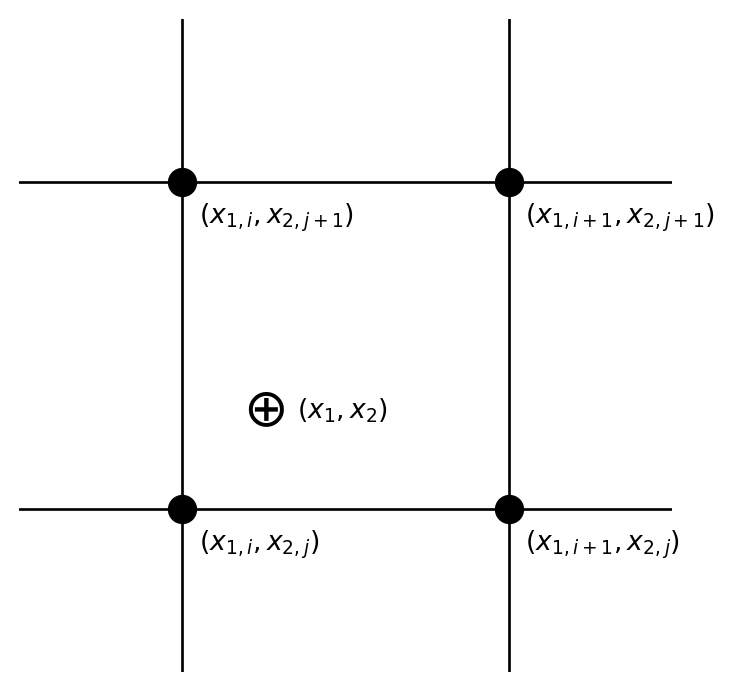
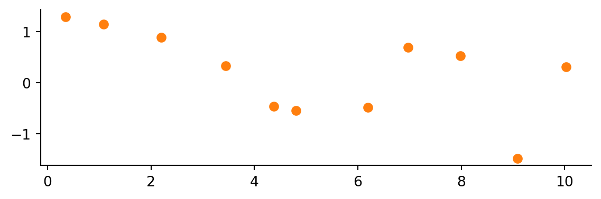
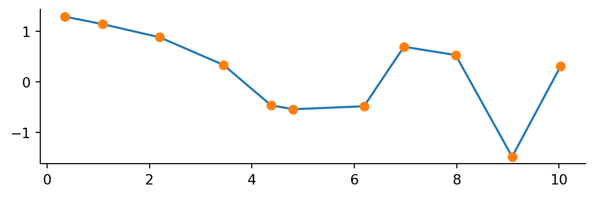
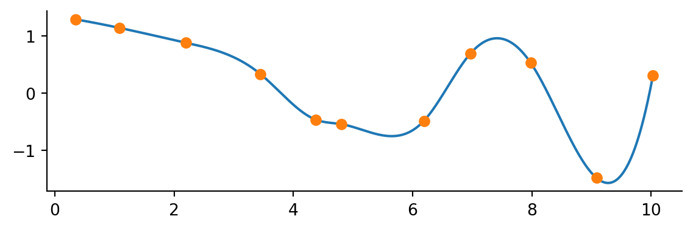
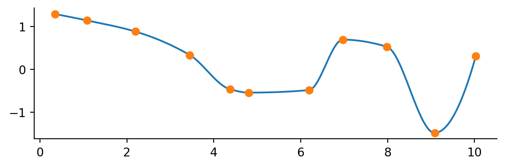
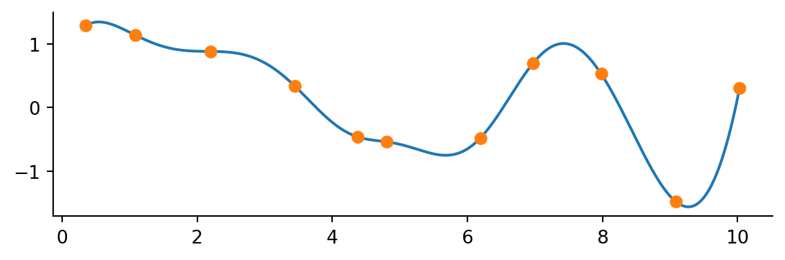

1 Interpolation
1.1 Linear Interpolation
A common computational problem in physics involves determining the value of a particular function at one or more points of interest from a tabulation of that function. For instance, we may wish to calculate the index of refraction of a type of glass at a particular wavelength, but be faced with the problem that that particular wavelength is not explicitly in the tabulation. In such cases, we need to be able to interpolate in the table to find the value of the function at the point of interest. Let us take a particular example.
BK-7 is a type of common optical crown glass. Its index of refraction \(n\) varies as a function of wavelength; for shorter wavelengths \(n\) is larger than for longer wavelengths, and thus violet light is refracted more strongly than red light, leading to the phenomenon of dispersion. The index of refraction is tabulated in Table 1.1.
| \(\lambda (Å)\) | \(n\) |
|---|---|
| 3511 | 1.53894 |
| 3638 | 1.53648 |
| 4047 | 1.53024 |
| 4358 | 1.52669 |
| 4416 | 1.52611 |
| 4579 | 1.52462 |
| 4658 | 1.52395 |
| 4727 | 1.52339 |
| 4765 | 1.5231 |
| 4800 | 1.52283 |
| 4861 | 1.52238 |
| 4880 | 1.52224 |
| \(\lambda (Å)\) | \(n\) |
|---|---|
| 4965 | 1.52165 |
| 5017 | 1.5213 |
| 5145 | 1.52049 |
| 5320 | 1.51947 |
| 5461 | 1.51872 |
| 5876 | 1.5168 |
| 5893 | 1.51673 |
| 6328 | 1.51509 |
| 6438 | 1.51472 |
| 6563 | 1.51432 |
| 6943 | 1.51322 |
| 7860 | 1.51106 |
| \(\lambda (Å)\) | \(n\) |
|---|---|
| 8210 | 1.51037 |
| 8300 | 1.51021 |
| 8521 | 1.50981 |
| 9040 | 1.50894 |
| 10140 | 1.50731 |
| 10600 | 1.50669 |
| 13000 | 1.50371 |
| 15000 | 1.5013 |
| 15500 | 1.50068 |
| 19701 | 1.495 |
| 23254 | 1.48929 |
Let us suppose that we wish to find the index of refraction at a wavelength of \(5000Å\). Unfortunately, that wavelength is not found in the table, and so we must estimate it from the values in the table. We must make some assumption about how \(n\) varies between the tabular values. Presumably it varies in a smooth sort of way and does not take wild excursions between the tabulated values. The simplest and quite often an entirely adequate assumption to make is that the actual function varies linearly between the tabulated values. This is the basis of linear interpolation.
NoteExercise 4.1
Determine, by hand, the value of the index of refraction of BK7 at \(5000Å\) using linear interpolation.
How do we carry out linear interpolation on the computer? Let us suppose that the function is tabulated at \(N\) points and takes on the values \(y_1,y_2,y_3 ... y_N\) at the points \(x_1,x_2,x_3 ... x_N\), and that we want to find the value of the function \(y\) at a point \(x\) that lies someplace in the interval between \(x_1\) and \(x_N\).
The first thing that we must do is to bracket \(x\), that is we must find a \(j\) such that \(x_j < x \leq x_{j+1}\). This can be accomplished by the following code fragment:
for(i=1;i<N;i++) {
if(xn[i] < x && xn[i+1] >= x) {
j = i;
break;
}
}where the xn’s are the tabulated points. When the if statement is satisfied, j is assigned the value of i and the procedure drops out of the loop. Please note that this is not the most efficient way to accomplish this task, especially if \(N\) is very large. We will look at a more efficient way later on.
Once we have bracketed \(x\), we can find the equation of the line between the points \((x_j,y_j)\) and \((x_{j+1},y_{j+1})\). This equation will be of the form \(y = mx+b4 where\)m$ is the slope and \(b\) is the y-intercept. As we all know, the slope is given by
\[ m = \frac{y_{j+1}-y_j}{x_{j+1}-x_j} \]
and the intercept can be found by substituting one point, say, \((x_j,y_j)\) into the resulting equation. Thus,
\[ b=y-mx=y_j-\frac{y_{j+1}-y_j}{x_{j+1}-x_j}x_j \]
yielding for the equation of the line, after some rearrangement,
\[ y==y_j+\left(\frac{y_{j+1}-y_j}{x_{j+1}-x_j}\right)(x-x_j) \]
It is left to the student to show (for future reference) that this equation may be rewritten \[ y=Ay_j+By_{j+1} \] where \[ A = \frac{x_{j+1}-x}{x_{j+1}-x_j} \] and \[ B = \frac{x-x_j}{x_{j+1}-x_j} \]
NoteExercise 4.2
Write a C-function that will linearly interpolate the tabular data for the index of refraction of BK-7 and return a value for \(n\) for wavelengths between \(3511Å\) and \(23254Å\). Write a driver program that will use this function to prompt the user for a wavelength and then print to screen the corresponding value of \(n\).
NoteExercise 4.3
The file data/boiling.dat contains data in two columns for the boiling point of water at different atmospheric pressures. The first column is the pressure in millibars, the second is the corresponding boiling point temperature in degrees Celsius. Write a C-function that initializes two vectors, P and T with the data in that data file (don’t read in the datafile – hardwire the data into your program), accepts the pressure as a double floating-point parameter, and returns the value of the temperature of the boiling point at that pressure. You should also write a driver program that will prompt the user for an atmospheric pressure, check whether it is within the limits of the data \((50 ≤ P ≤ 2150)\), calls your C-function, and prints to the screen the boiling point of water at that pressure.
1.2 Polynomial Interpolation
Linear interpolation is good enough for government work, and it is even better than that. Because it is simple and makes the simplest possible assumption about the data, it should be employed in all cases except where it is manifestly inadequate. There are such cases. Sometimes the function being interpolated is very non-linear or has been tabulated at such wide intervals that linear interpolation would lead to large errors. Some applications demand more than simply the functional values at the interpolated points; sometimes the derivative of the function is required as well. With linear interpolation, the derivative is a constant between the tabulated points, and may actually be undefined at the tabulated points!
For such applications it may be best to interpolate using a polynomial interpolating function or functions. It can be shown that the following poly- nomial \(P(x)\) of degree \(N−1\) will exactly pass through the N tabulated points of the function \(y = f(x)\):
\[ \begin{aligned} P(x) =\;& \frac{(x - x_2)(x - x_3)\cdots(x - x_N)} {(x_1 - x_2)(x_1 - x_3)\cdots(x_1 - x_N)}\,y_1 \\[1em] &+ \frac{(x - x_1)(x - x_3)\cdots(x - x_N)} {(x_2 - x_1)(x_2 - x_3)\cdots(x_2 - x_N)}\,y_2 \\[1em] &+ \cdots \\[1em] &+ \frac{(x - x_1)(x - x_2)\cdots(x - x_{N-1})} {(x_N - x_1)(x_N - x_2)\cdots(x_N - x_{N-1})}\,y_N \end{aligned} \]
The problem with the direct application of the polynomial \(P(x)\) is that for tabulations with many points, it can lead to very high degree polynomials. For instance, if a function is tabulated at 100 points, the above equation would yield a polynomial of degree 99! Such a polynomial could potentially fluctuate wildly between the tabulated points and thus not be a good representation of the actual function. \(P(x)\) is more usually applied to subsets of the tabulated points. For instance, if the polynomial is applied to subsets of 3 points, it yields parabolic interpolation, which can be much superior to linear interpolation if the function has a number of minima and maxima.
One problem with parabolic 3-point interpolation is that when it comes to bracketing \(x\), there is an ambiguity – does one bracket between \(x_1\) and \(x_2\) or between \(x_2\) and \(x_3\)? This is one reason why cubic 4-point interpolation is more commonly practiced – the bracketing is then between \(x_2\) and \(x_3\) with no ambiguity. Such interpolation is also called Lagrangian 4-point interpolation. The Lagrangian 4-point interpolation equation can be written:
\[ \begin{aligned} L(x) =\;& \frac{(x - x_2)(x - x_3)(x - x_4)} {(x_1 - x_2)(x_1 - x_3)(x_1 - x_4)}\,y_1 \\[1em] &+ \frac{(x - x_1)(x - x_3)(x - x_4)} {(x_2 - x_1)(x_2 - x_3)(x_2 - x_4)}\,y_2 \\[1em] &+ \frac{(x - x_1)(x - x_2)(x - x_4)} {(x_3 - x_1)(x_3 - x_2)(x_3 - x_4)}\,y_3 \\[1em] &+ \frac{(x - x_1)(x - x_2)(x - x_3)} {(x_4 - x_1)(x_4 - x_2)(x_4 - x_3)}\,y_4 \end{aligned} \]
which the student can easily verify by reference to the equation for \(P(x)\).
To apply this interpolation equation, the user should first bracket \(x\) between \(x_j\) and \(x_{j+1}\) as before, but now identify \(x_j\) with \(x_2\) in the above equation and \(x_{j+1}\) with \(x_3\). It then follows that \(x_1\) will be \(x_{j−1}\) and \(x_4\) will be \(x_{j+2}\). The perceptive student will see that this will lead to a problem at the endpoints. For instance, if \(x\) is situated between the first two tabulated points, \(x_{j−1}\) will be undefined. Likewise, if \(x\) is situated between the last two tabulated points, \(x_{j+2}\) will be undefined. Thus in those intervals, the user must either interpolate linearly, or, in the first case, use the polynomial that would be used for an \(x\) bracketed between the 2nd and 3rd tabulated points, and similarly for the last case.
NoteExercise 4.4
Write a C-function that will implement the 4-point Lagrangian interpolation formula above. For the endpoints, use the polynomial that would have been defined for the adjacent interval as described above. Modify the driver program in Exercise 4.2 (interpolation in a table of the wavelength and the index of refraction for BK-7 glass) to use this new C-function. Compare the results between the two programs.
NoteExercise 4.5
Write a C-function that will implement the 4-point Lagrangian interpolation formula above. For the endpoints, use the polynomial that would have been defined for the adjacent interval as described above. Modify the driver program in Exercise 4.3 (interpolation in a table of atmospheric pressure and the boiling point of water) to use this new C-function. Compare the results between the two programs.
We have only scratched the surface of the subject of interpolation. The subject of Extrapolation – finding a value for a function outside the range of the defined points – is much more dangerous. Interpolation schemes can be used for extrapolation, but only with great care!
Before we leave the subject of interpolation, let us examine one further subject, that of efficiently bracketing \(x\). If we have a set of \(x\)’s (say in a vector x[i]) in numerical order that we must find interpolated values for, there is a simple time saving step that we can use, implemented in the following fragment of code (assume x is a vector of dimension n):
j = 1;
for(k=1;k<=n;k++) {
for(i=j;i<N;i++) {
if(xn[i] < x[k] && xn[i+1] >= x[k]) {
j = i;
break;
}
}
here is your interpolation function code
}Notice that the second for loop begins at i=j and not i=1; since the \(x_k\)’s are in numerical order, if \(x_k\) is bracketed between xn[j] and xn[j+1], there is no need to search beginning at i=1 for \(x_{k+1}\) because it will either be bracketed between the same pair or later pairs (note that we are obviously also assuming that the xn[j]’s are in numerical order). This can save an enormous amount of time in a code that needs to interpolate in a large (say \(N > 100\)) table. Another useful trick is that of bisection. Further notes on bisection and other techniques for efficiently bracketing \(x\) can be found in Numerical Recipes (Press et al. 1992).
1.3 Interpolation in 2 dimensions
Some problems require interpolation in a two-dimensional grid of data. Let us suppose, for instance, that \(y = y(x_1, x_2)\) where \(x_1\) and \(x_2\) are the two independent variables. The functional value \(y\) is tabulated on a Cartesian grid, and so the first thing the programmer must do is to bracket the desired point \((x_1, x_2)\) in this grid (see figure below):
This bracketing can be done by bracketing in the two dimensions one at a time, using the technique discussed earlier.
The simplest interpolation technique in two dimensions is bilinear interpolation. If we define
\[ \begin{aligned} y_1 &= y(x_{1,i}, x_{2,j}) \\ y_2 &= y(x_{1,i+1}, x_{2,j}) \\ y_3 &= y(x_{1,i+1}, x_{2,j+1}) \\ y_4 &= y(x_{1,i}, x_{2,j+1}) \end{aligned} \]
i.e., working our way counterclockwise around the above figure, then the interpolation formulae are:
\[ \begin{aligned} t &= (x_1 - x_{1,i})/(x_{1,i+1} - x_{1,i}) \\ u &= (x_2 - x_{2,j})/(x_{2,j+1} - x_{2,j}) \end{aligned} \]
which make both \(t\) and \(u\) lie between 0 and 1. Then,
\[ y(x_1, x_2) = (1 - t)(1 - u)y_1 + t(1 - u)y_2 + tu y_3 + (1 - t)u y_4 \]
where \((x_1, x_2)\) are the coordinates of the desired point.
NoteExercise 4.6
A good example of the need to carry out interpolation in two dimensions is found in the calculation of partition functions. In certain plasma-physics contexts, it is necessary to calculate the partition functions of atoms and ions.
A partition function, \(U\), is essentially an overall “statistical weight” for the atom, calculated by carrying out a weighted sum — weighted according to the populations of the levels — of the statistical weights for all of the energy levels in the atom.
At low temperatures, the partition function is simply the statistical weight of the ground level of the atom, but at higher temperatures, the partition function becomes larger, as the populations in the excited levels become significant.
The partition function is also a function of density, as at high densities in the plasma, the outermost energy levels are effectively “stripped off,” resulting in a lowering of the ionization energy, usually denoted as \(\Delta E\). Thus, \(U = U(T, \Delta E)\).
Because the calculation for a partition function can be very complex, they are usually calculated and tabulated so that users need not carry out the full calculation. The following table is a tabulation for the partition function for the hydrogen atom:
| T (K) | ΔE = 0.10 | ΔE = 0.50 | ΔE = 1.00 | ΔE = 2.00 |
|---|---|---|---|---|
| 3250 | 2.000 | 2.000 | 2.000 | 2.000 |
| 10083 | 2.000 | 2.000 | 2.000 | 2.000 |
| 14188 | 2.025 | 2.006 | 2.005 | 2.004 |
| 15643 | 2.068 | 2.016 | 2.012 | 2.009 |
| 17246 | 2.168 | 2.037 | 2.027 | 2.020 |
| 19014 | 2.384 | 2.080 | 2.058 | 2.040 |
| 20963 | 2.814 | 2.162 | 2.114 | 2.078 |
| 23111 | 3.610 | 2.308 | 2.213 | 2.142 |
| 25480 | 4.991 | 2.551 | 2.377 | 2.246 |
Write a function that will perform a 2-D interpolation in this table, and use it to determine the partition function for Hydrogen at the following points \((T,\Delta E)\): (16000, 0.25), (18500, 1.50), (19000, 0.15), (25023, 1.99).
NoteExercise 4.7
The study of plasmas is an important field of physics, and is essential in the understanding of the interiors of stars and the functioning of fusion reactors.
Hydrogen becomes increasingly ionized (hydrogen loses its electron when ionized) with increasing temperature, but the density of electrons, \(N_e\), also plays an important role.
The following table gives the ratio of ionized hydrogen atoms to all forms of hydrogen (neutral + ionized) as a function of both \(T\) (in kelvins) and \(N_e\) (number of electrons per cubic centimeter).
Write a C-function and driver that will interpolate in this table. The driver should prompt the user for \(T\) (in kelvins) and \(N_e\). Note that the table is tabulated in terms of \(\log N_e\).
| T(K) | 10.0 | 11.0 | 12.0 | 13.0 | 14.0 | 15.0 | 16.0 | 17.0 |
|---|---|---|---|---|---|---|---|---|
| 1000.0 | 0.0000 | 0.0000 | 0.0000 | 0.0000 | 0.0000 | 0.0000 | 0.000 | 0.0000 |
| 2000.0 | 0.0000 | 0.0000 | 0.0000 | 0.0000 | 0.0000 | 0.0000 | 0.000 | 0.0000 |
| 3000.0 | 0.0000 | 0.0000 | 0.0000 | 0.0000 | 0.0000 | 0.0000 | 0.000 | 0.0000 |
| 4000.0 | 0.0000 | 0.0000 | 0.0000 | 0.0000 | 0.0000 | 0.0000 | 0.000 | 0.0000 |
| 5000.0 | 0.0017 | 0.0002 | 0.0000 | 0.0000 | 0.0000 | 0.0000 | 0.000 | 0.0000 |
| 6000.0 | 0.2980 | 0.0407 | 0.0042 | 0.0004 | 0.0000 | 0.0000 | 0.000 | 0.0000 |
| 7000.0 | 0.9582 | 0.6961 | 0.1864 | 0.0224 | 0.0023 | 0.0002 | 0.000 | 0.0000 |
| 8000.0 | 0.9979 | 0.9791 | 0.8241 | 0.3191 | 0.0448 | 0.0047 | 0.000 | 0.0000 |
| 9000.0 | 0.9998 | 0.9980 | 0.9804 | 0.8335 | 0.3335 | 0.0477 | 0.005 | 0.0005 |
| 10000.0 | 1.0000 | 0.9997 | 0.9971 | 0.9713 | 0.7719 | 0.2529 | 0.032 | 0.0034 |
| 11000.0 | 1.0000 | 0.9999 | 0.9994 | 0.9939 | 0.9425 | 0.6211 | 0.140 | 0.0161 |
| 12000.0 | 1.0000 | 1.0000 | 0.9998 | 0.9984 | 0.9841 | 0.8606 | 0.381 | 0.0581 |
| 13000.0 | 1.0000 | 1.0000 | 0.9999 | 0.9995 | 0.9948 | 0.9503 | 0.656 | 0.1607 |
| 14000.0 | 1.0000 | 1.0000 | 1.0000 | 0.9998 | 0.9980 | 0.9807 | 0.835 | 0.3373 |
| 15000.0 | 1.0000 | 1.0000 | 1.0000 | 0.9999 | 0.9992 | 0.9917 | 0.922 | 0.5448 |
1.4 Interpolation in Python
Let’s say you have run an experiment and have some data.
# Pretend you don't know the functional form of the data.
num_samples = 11
x_data = np.linspace(0, 10, num=num_samples) + np.random.normal(scale=.2, size=num_samples)
y_data = np.cos(-x_data**2 / 9.0) + np.random.normal(scale=.2, size=num_samples)
fig, ax = plt.subplots()
ax.plot(x_data, y_data, 'o', color='C1')
Now you want to connect the dots … I mean interpolate your data.
Numpy has a method (numpy.interp) for simple linear interpolation. The method takes in an array of new x’s where you want to calculate the new y’s. The original x and y points are also needed.
x_interp = np.linspace(x_data.min(), x_data.max(), num=1001)
y_interp = np.interp(x_interp, x_data, y_data)
fix, ax = plt.subplots()
ax.plot(x_interp, y_interp)
ax.plot(x_data, y_data, 'o')
If you want a fancier smooth line SciPy has got you covered! The interpolate subpackage contains many methods to suit your needs. These methods follow a different pattern than the Numpy approach. When using the SciPy interpolate methods you provide the original data points and are returned a function you can call to interpolate new values.
As an example consider the CubicSpline method
from scipy.interpolate import CubicSpline
f = CubicSpline(x_data, y_data)
y_interp = f(x_interp)
fix, ax = plt.subplots()
ax.plot(x_interp, y_interp)
ax.plot(x_data, y_data, 'o')
Quick and easy! There are other interpolation methods. For instance, maybe you are concerned with the line overshooting the data. An alternative is to use a so-called monotone cubic interpolant which attempts to preserve the local shape implied by the data. An example is the PchipInterpolator.
from scipy.interpolate import PchipInterpolator
f = PchipInterpolator(x_data, y_data)
y_interp = f(x_interp)
fix, ax = plt.subplots()
ax.plot(x_interp, y_interp)
ax.plot(x_data, y_data, 'o')
These cubic methods are typically fine for most application. There is also a generalized method for making interpolating splines of any degree but use with caution. You may introduce unexpected wiggles!
from scipy.interpolate import make_interp_spline
f = make_interp_spline(x_data, y_data, k=5)
y_interp = f(x_interp)
fix, ax = plt.subplots()
ax.plot(x_interp, y_interp)
ax.plot(x_data, y_data, 'o')
There are other methods for 2-D interpolation and smoothing as well. Have a look at the SciPy Interpolation User Guide for more details.